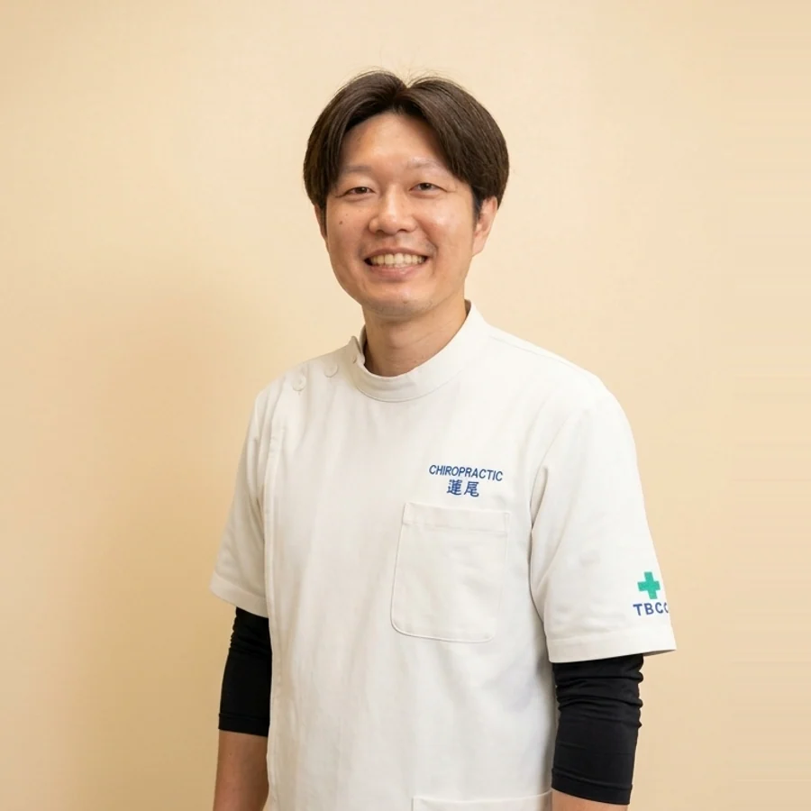
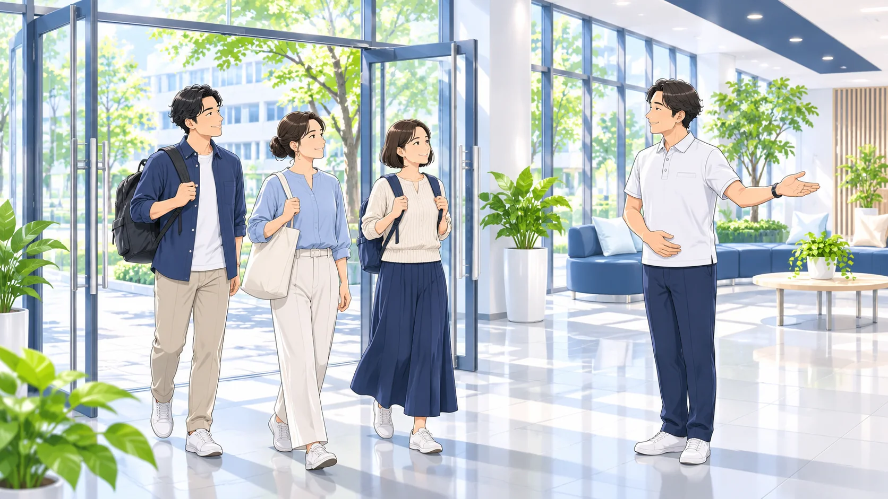
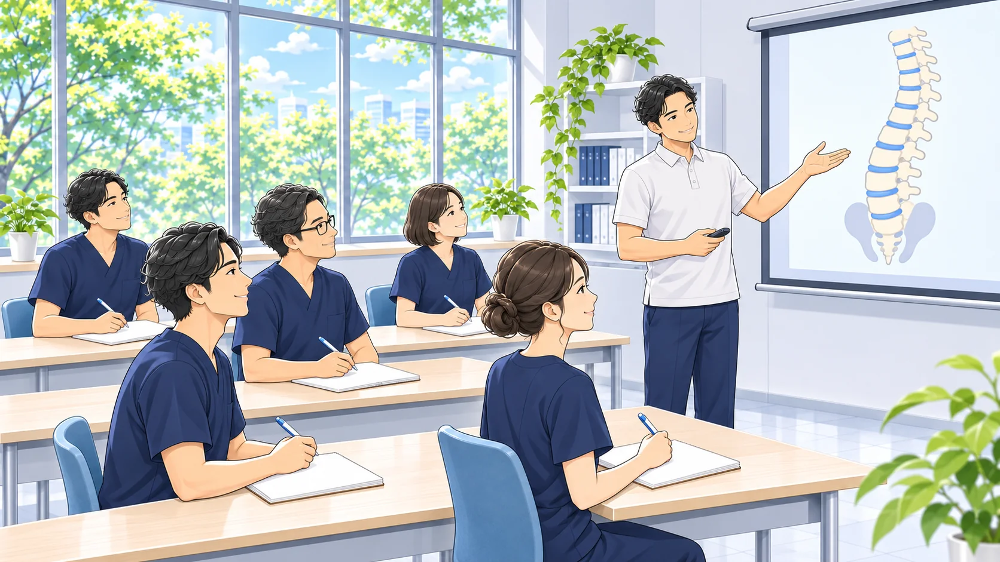
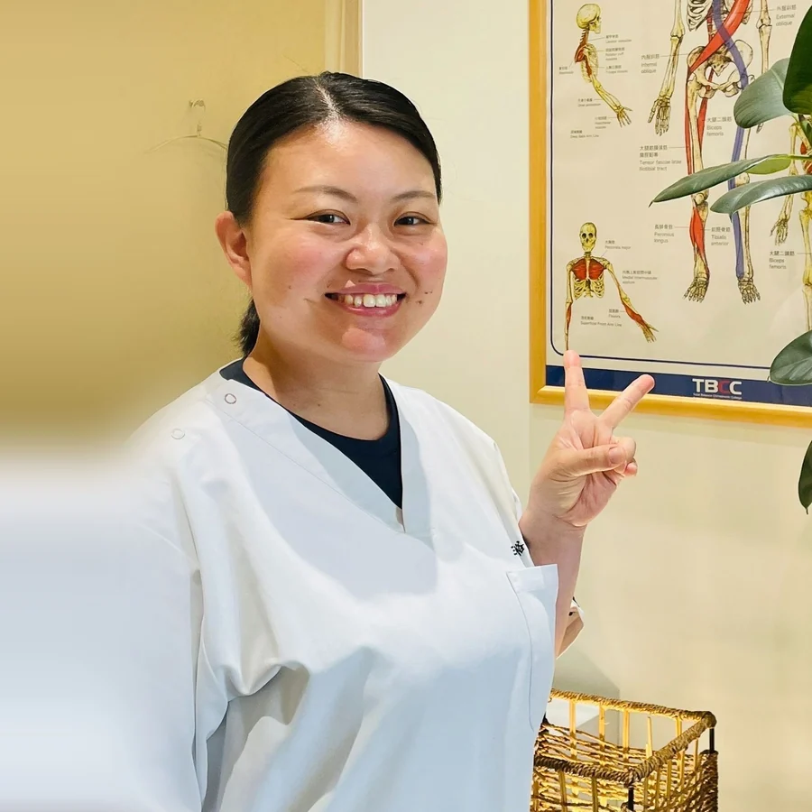
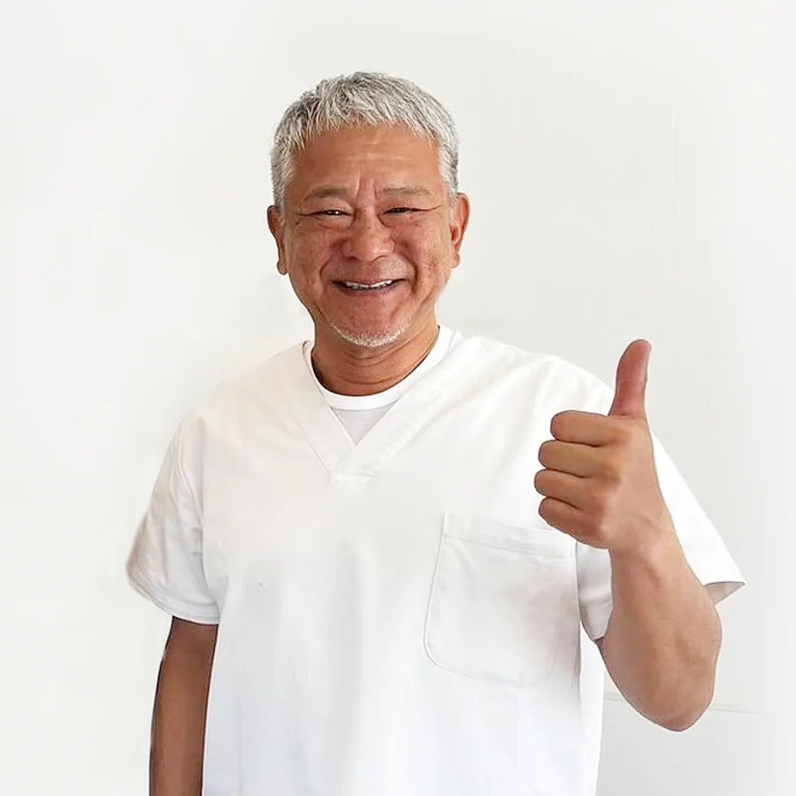

学院長
蓮尾 智先生
知識と技術を身につけ、信頼される整体治療家へ。
姿勢や関節の動き、筋肉の状態を確認するだけでなく、身体の状態を分かりやすく説明する力も大切にしています。実技を通して、一人ひとりに合わせた施術を学びます。
公認カイロプラクター／アクティベータテクニック・固有受容性神経筋促通法療法・人体解剖学修了
日本整体師育成専門学院の教育

教育方針
世の中には、さまざまな施術技術があります。どの技術を学ぶとしても、身体の知識と施術の基礎は欠かせません。
日本整体師育成専門学院ではまず整体を学び、身体を知り、状態を見極め、手で変化を感じ取る力を育てます。さらに高度な整体技術であるカイロプラクティックへと、学びを深めていきます。
技術だけでなく、患者様の悩みや生活背景にも目を向ける。人の健康を支える施術者を育成することが、私たちの教育です。

講師紹介

学院長
姿勢や関節の動き、筋肉の状態を確認するだけでなく、身体の状態を分かりやすく説明する力も大切にしています。実技を通して、一人ひとりに合わせた施術を学びます。
公認カイロプラクター／アクティベータテクニック・固有受容性神経筋促通法療法・人体解剖学修了

リラクゼーションテクニック講師
大切なのは力の強さではなく、一人ひとりの身体に合わせた知識と技術。動きや力の加え方を丁寧に指導し、未経験の方の学びを支えます。
整体院OASIS筑紫野院 院長／公認カイロプラクター

学院創設者
人の健康を支える仕事の価値を伝え、一人ひとりのペースを大切にした学びを支えます。カイロプラクティックを通して、健康に向き合う姿勢を伝えています。
日本整体師育成専門学院 創設者／特定非営利活動法人日本整体療法技術支援協会 前理事長
各種施術テクニック ／ トレーナー・運動療法 ／ 整骨医学に関する各種治療法 ／ 経営・マネジメント ／ 独立・開業ノウハウ
推薦の言葉
※学院案内掲載のメッセージを要約しています。

新しい一歩を、ここから。
学び方も、仕事のことも、これからの自分のことも。
まずは気軽に、あなたの目指す未来を聞かせてください。